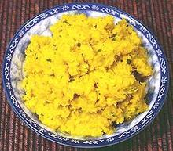

|
Kroeung Curry PasteCambodia - Kroeung | ||||
| Makes: Effort: Sched: DoAhead: |
9 oz ** 30 min Yes |
A very popular curry paste in Cambodia, used as the base flavoring for many soups and stir frys. It is not very hot but it certainly isn't bland either. | |||
| Be aware that all plastic and wood items that contact fresh turmeric root will be lightly stained yellow, but it will go away with use. | |||||
|
3 4 1 1 3 8 1 |
oz oz oz cl t |
Lemon Grass stalk Kafir Lime leaves (1) Galangal fresh (2) Turmeric fresh (3) Shallots Garlic Salt |
This paste is made by pounding in a large stone mortar. Mine is 7 inches across (5-1/2 inch bowl) with a 3 pound pestel - much less is inadequate - but I do cheat and use a mini food processor for the initial grinding before I pound it in the mortar. Start with the hardest ingredients and work to the softest. You can add a little water if necessary while processing and pounding but 2 T max.
|